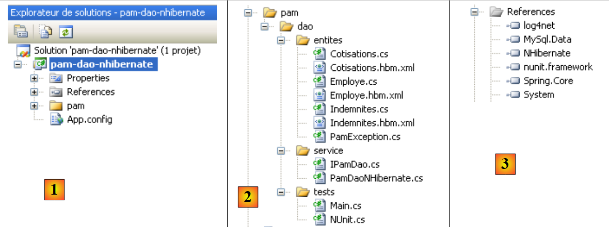
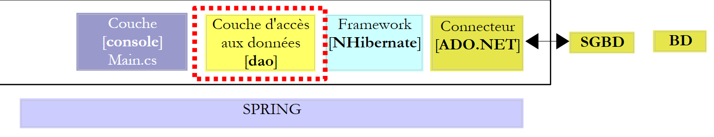
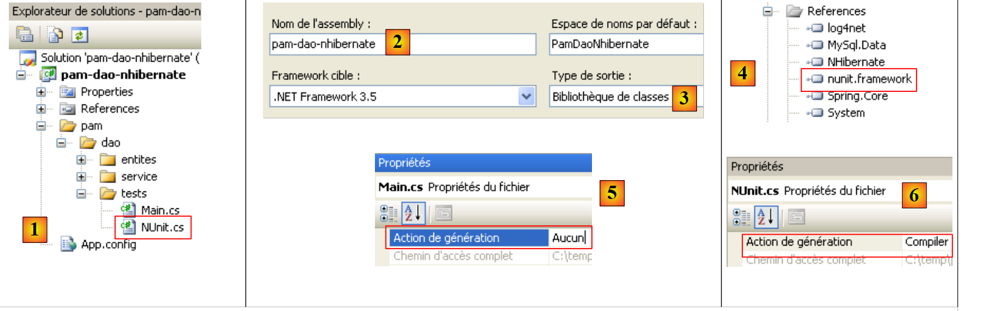
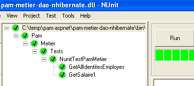
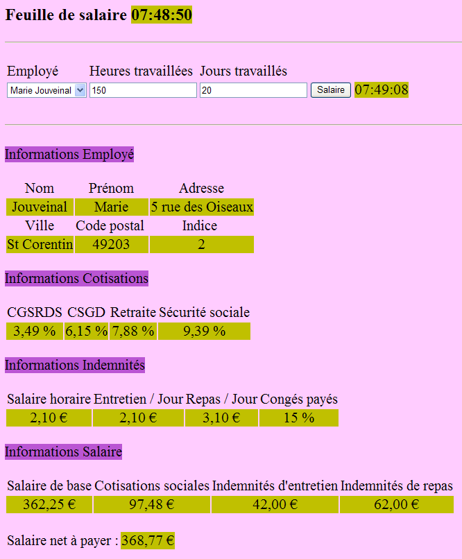

7. The [SimuPaie] application – version 3 – 3-tier architecture with NHibernate
Recommended reading: "C# 2008, Chapter 4: 3-tier architectures, NUnit tests, Spring framework".
7.1. General Application Architecture
The [SimuPaie] application will now have the following three-tier structure:
 |
- The [1-dao] layer (dao = Data Access Object) will handle data access.
- The [2-business] layer will handle the business logic of the application, specifically payroll calculations.
- The [3-ui] layer (ui = User Interface) will handle the presentation of data to the user and the execution of user requests. We refer to the set of modules performing this function as the [Application]. It serves as the user interface.
- The three layers will be made independent through the use of .NET interfaces
- The integration of the different layers will be handled by Spring IoC
The processing of a client request follows these steps:
- The client makes a request to the application.
- The application processes this request. To do so, it may need assistance from the [business] layer, which itself may need the [DAO] layer if data needs to be exchanged with the database.
- The application receives a response from the [business] layer. Based on this response, it sends the appropriate view (= the response) to the client.
Let’s take the example of calculating a childminder’s pay. This will require several steps:
 |
- The [UI] layer will need to ask the user
- the identity of the person whose payroll is to be calculated
- the number of days worked by that person
- the number of hours worked
- To do this, it will need to present the user with a list of people (last name, first name, SSN) from the [EMPLOYEES] table so that the user can select one of them. The [ui] layer will use the path [2, 3, 4, 5, 6, 7] to retrieve this information. Operation [2] is the request for the list of employees; operation [7] is the response to that request. Once this is done, the [ui] layer can present the list of employees to the user via [8].
- The user will send the [ui] layer the number of days worked and the number of hours worked. This is operation [1] above. During this step, the user interacts only with the [ui] layer. It is this layer that will verify the validity of the entered data. Once this is done, the user will request the payroll calculation.
- The [ui] layer will ask the business layer to perform this calculation. To do so, it will send the data it received from the user to the business layer. This is operation [2].
- The [business] layer needs certain information to perform its task:
- more complete information about the person (address, index, etc.)
- allowances linked to their pay grade
- the rates of the various social security contributions to be deducted from the gross salary
It will request this information from the [DAO] layer using the path [3, 4, 5, 6]. [3] is the initial request and [6] is the response to that request.
- Having all the data it needed, the [business] layer calculates the pay for the person selected by the user.
- The [business] layer can now respond to the request from the [ui] layer made in (d). This is path [7].
- The [ui] layer will format these results to present them to the user in an appropriate form and then display them. This is path [8].
- One can imagine that these results need to be stored in a file or a database. This can be done automatically. In this case, after operation (f), the [business] layer will ask the [DAO] layer to save the results. This will be path [3, 4, 5, 6]. This can also be done at the user’s request. Path [1-8] will be used by the request-response cycle.
As seen in this description, a layer uses the resources of the layer to its right, never those of the layer to its left.
Our first implementation of this three-tier architecture will be an ASP.NET application in which
- the [DAO] and [business] layers will be implemented by DLLs
- and the [ui] layer will be implemented by the web form from version 1 (see section 4.2.1).
We begin by implementing the [DAO] layer using the NHibernate framework.
7.2. The [DAO] data access layer
 |
7.2.1. The Visual Studio C# project for the [DAO] layer
The Visual Studio project for the [dao] layer is as follows:
 |
- in [1], the project as a whole
- in [2], the various classes of the project
- in [3], the project references.
- in [4], a [lib] folder containing the DLLs required for the various projects that follow
In the project references [3], the following DLLs are found:
- NHibernate: for the NHibernate ORM
- MySql.Data: the ADO.NET driver for the MySQL DBMS
- Spring.Core: for the Spring framework
- log4net: a logging library
- nunit.framework: a unit testing library
These references were taken from the [lib] folder [4]. Ensure that the "Local Copy" property for all these references is set to "True" [5]:
 |
7.2.2. Entities in the [dao] layer
 |
The entities (objects) required for the [dao] layer have been gathered in the project’s [entities] folder. Some are already familiar to us: [Contributions] described in section 6.3.2.1, [Employee] described in section 6.3.2.3, [Allowances] described in section 6.3.2.2. They are all in the [Pam.Dao.Entities] namespace.
The [Employee] class is defined as follows:
namespace Pam.Dao.Entites {
public class Employe {
// automatic properties
public virtual int Id { get; set; }
public virtual int Version { get; set; }
public virtual string SS { get; set; }
public virtual string Nom { get; set; }
public virtual string Prenom { get; set; }
public virtual string Adresse { get; set; }
public virtual string Ville { get; set; }
public virtual string CodePostal { get; set; }
public virtual Indemnites Indemnites { get; set; }
// manufacturers
public Employe() {
}
// ToString
public override string ToString() {
return string.Format("[{0},{1},{2},{3},{4},{5},{6}]", SS, Nom, Prenom, Adresse, Ville, CodePostal, Indemnites);
}
}
}
7.2.3. The [PamException] class
The [dao] layer is responsible for exchanging data with an external source. This exchange may fail. For example, if information is requested from a remote service on the Internet, retrieving it will fail due to any network outage. For this type of error, it is standard practice in Java to throw an exception. If the exception is not of type [RunTimeException] or a derived type, you must indicate in the method signature that the method throws an exception. In .NET, all exceptions are unhandled, i.e., equivalent to Java’s [RunTimeException] type. Therefore, there is no need to declare that the methods [GetAllEmployeeIDs, GetEmployee, GetContributions] are likely to throw an exception.
However, it is useful to be able to distinguish between different exceptions, as their handling may differ. Thus, the code handling various types of exceptions can be written as follows:
try{
... code pouvant générer divers types d'exceptions
}catch (Exception1 ex1){
...on gère un type d'exceptions
}catch (Exception2 ex2){
...on gère un autre type d'exceptions
}finally{
...
}
We therefore create an exception type for the [DAO] layer of our application. This is the following [PamException] type:
using System;
namespace Pam.Dao.Entites {
public class PamException : Exception {
// the error code
public int Code { get; set; }
// manufacturers
public PamException() {
}
public PamException(int Code)
: base() {
this.Code = Code;
}
public PamException(string message, int Code)
: base(message) {
this.Code = Code;
}
public PamException(string message, Exception ex, int Code)
: base(message, ex) {
this.Code = Code;
}
}
}
- line 2: the class belongs to the [Pam.Dao.Entities] namespace
- line 4: the class derives from the [Exception] class
- line 7: it has a public property [Code] which is an error code
- In our [dao] layer, we will use two types of constructors:
- the one in lines 18–21, which can be used as shown below:
- (continued)
- or the one in lines 23–26, designed to propagate an exception that has already occurred by wrapping it in a [PamException] exception:
try{
....
}catch (IOException ex){
// on encapsule l'exception
throw new PamException("Problème d'accès aux données",ex,10);
}
This second method has the advantage of not losing the information contained in the first exception.
7.2.4. NHibernate mapping files <--> classes
Let’s return to the application architecture:
 |
When reading, the NHibernate framework retrieves data from the database and transforms it into objects, the classes of which we have just presented. When writing, it does the opposite: starting from objects, it creates, updates, and deletes rows in the database tables. The files responsible for the table <--> class transformation have already been presented:
|
- the [Cotisations.hbm.xml] file presented in section 6.3.2.1 maps the [COTISATIONS] table to the [Cotisations] class
<?xml version="1.0" encoding="utf-8" ?>
<hibernate-mapping xmlns="urn:nhibernate-mapping-2.2"
namespace="Pam.Dao.Entites" assembly="pam-dao-nhibernate">
<class name="Cotisations" table="COTISATIONS">
<id name="Id" column="ID">
<generator class="native" />
</id>
<version name="Version" column="VERSION"/>
<property name="CsgRds" column="CSGRDS" not-null="true"/>
<property name="Csgd" column="CSGD" not-null="true"/>
<property name="Retraite" column="RETRAITE" not-null="true"/>
<property name="Secu" column="SECU" not-null="true"/>
</class>
</hibernate-mapping>
- The [Employe.hbm.xml] file presented in section 6.3.2.3 maps the [EMPLOYEES] table to the [Employee] class
<?xml version="1.0" encoding="utf-8" ?>
<hibernate-mapping xmlns="urn:nhibernate-mapping-2.2"
namespace="Pam.Dao.Entites" assembly="pam-dao-nhibernate">
<class name="Employe" table="EMPLOYES">
<id name="Id" column="ID">
<generator class="native" />
</id>
<version name="Version" column="VERSION"/>
<property name="SS" column="SS" length="15" not-null="true" unique="true"/>
<property name="Nom" column="NOM" length="30" not-null="true"/>
<property name="Prenom" column="PRENOM" length="20" not-null="true"/>
<property name="Adresse" column="ADRESSE" length="50" not-null="true" />
<property name="Ville" column="VILLE" length="30" not-null="true"/>
<property name="CodePostal" column="CP" length="5" not-null="true"/>
<many-to-one name="Indemnites" column="INDEMNITE_ID" cascade="save-update" lazy="false"/>
</class>
</hibernate-mapping>
- The [Indemnites.hbm.xml] file presented in section 6.3.2.2 maps the [INDEMNITES] table to the [Indemnites] class
<?xml version="1.0" encoding="utf-8" ?>
<hibernate-mapping xmlns="urn:nhibernate-mapping-2.2"
namespace="Pam.Dao.Entites" assembly="pam-dao-nhibernate">
<class name="Indemnites" table="INDEMNITES">
<id name="Id" column="ID">
<generator class="native" />
</id>
<version name="Version" column="VERSION"/>
<property name="Indice" column="INDICE" not-null="true" unique="true"/>
<property name="BaseHeure" column="BASE_HEURE" not-null="true"/>
<property name="EntretienJour" column="ENTRETIEN_JOUR" not-null="true"/>
<property name="RepasJour" column="REPAS_JOUR" not-null="true" />
<property name="IndemnitesCp" column="INDEMNITES_CP" not-null="true"/>
</class>
</hibernate-mapping>
Note that in the <hibernate-mapping> tag of these files (line 2), the following attributes are present:
- namespace: Pam.Dao.Entities. The [Contributions], [Employee], and [Allowances] classes must be located in this namespace.
- assembly: pam-dao-nhibernate. The mapping files [*.hbm.xml] must be encapsulated in a DLL named [pam-dao-nhibernate]. To achieve this, the C# project is configured as follows:
 |
- in [1], the project assembly is named [pam-dao-nhibernate]
- in [2], the mapping files [*.hbm.xml] are included [3] in the project assembly
7.2.5. The [ IPamDao] interface of the [DAO] layer
Let’s return to our application’s architecture:
 |
In simple cases, we can start from the [business] layer to discover the application’s interfaces. To function, it needs data:
- already available in files, databases, or via the network. These are provided by the [dao] layer.
- not yet available. It is then provided by the [ui] layer, which obtains it from the application user.
What interface should the [DAO] layer provide to the [business] layer? What interactions are possible between these two layers? The [DAO] layer must provide the following data to the [business] layer:
- the list of child care providers to allow the user to select a specific one
- complete information about the selected person (address, index, etc.)
- the allowances associated with the person’s index
- the rates for the various social security contributions
This information is known before payroll calculation and can therefore be stored. In the [business] -> [DAO] direction, the [business] layer can request that the [DAO] layer record the result of the payroll calculation. We will not do this here.
With this information, we could attempt an initial definition of the [dao] layer interface:
using Pam.Dao.Entites;
namespace Pam.Dao.Service {
public interface IPamDao {
// list of all employee identities
Employe[] GetAllIdentitesEmployes();
// an individual employee with benefits
Employe GetEmploye(string ss);
// list of all contributions
Cotisations GetCotisations();
}
}
- Line 1: We import the namespace for entities in the [dao] layer.
- Line 3: The [dao] layer is in the [Pam.Dao.Service] namespace. Elements in the [Pam.Dao.Entities] namespace can be created in multiple instances. Elements in the [Pam.Dao.Service] namespace are created as a single instance (singleton). This is what justified the choice of namespace names.
- Line 4: The interface is named [IPamDao]. It defines three methods:
- Line 6: [GetAllIdentitesEmployes] returns an array of objects of type [Employe] representing the list of child care providers in a simplified format (last name, first name, SS).
- Line 8: [GetEmploye] returns an [Employe] object: the employee with the social security number passed as a parameter to the method, along with the benefits associated with their pay grade.
- Line 10, [GetCotisations] returns the [Cotisations] object, which encapsulates the rates of the various social security contributions to be deducted from the gross salary.
7.3. Implementation and testing of the [dao] layer
7.3.1. The Visual Studio project
The Visual Studio project has already been presented. As a reminder:
 |
- in [1], the project as a whole
- in [2], the various classes of the project. The [entities] folder contains the entities handled by the [dao] layer as well as the NHibernate mapping files. The [service] folder contains the [IPamDao] interface and its implementation [PamDaoNHibernate]. The [tests] folder contains a console test [Main.cs] and a unit test [NUnit.cs].
- in [3], the project references.
7.3.2. The console test program [Main.cs]
The test program [Main.cs] runs in the following architecture:
 |
It is responsible for testing the methods of the [IPamDao] interface. A basic example might be the following:
using System;
using Pam.Dao.Entites;
using Pam.Dao.Service;
using Spring.Context.Support;
namespace Pam.Dao.Tests {
public class MainPamDaoTests {
public static void Main() {
try {
// layer instantiation [dao]
IPamDao pamDao = (IPamDao)ContextRegistry.GetContext().GetObject("pamdao");
// list of employee identities
foreach (Employe Employe in pamDao.GetAllIdentitesEmployes()) {
Console.WriteLine(Employe.ToString());
}
// an employee with benefits
Console.WriteLine("------------------------------------");
Console.WriteLine(pamDao.GetEmploye("254104940426058"));
Console.WriteLine("------------------------------------");
// list of contributions
Cotisations cotisations = pamDao.GetCotisations();
Console.WriteLine(cotisations.ToString());
} catch (Exception ex) {
// exception display
Console.WriteLine(ex.ToString());
}
//break
Console.ReadLine();
}
}
}
- Line 11: We ask Spring for a reference to the [dao] layer.
- lines 13–15: testing the [GetAllEmployeeIDs] method of the [IPamDao] interface
- line 18: testing the [GetEmploye] method of the [IPamDao] interface
- line 21: testing the [GetCotisations] method of the [IPamDao] interface
Spring, NHibernate, and log4net are configured by the following [ App.config] file:
<?xml version="1.0" encoding="utf-8" ?>
<configuration>
<!-- configuration sections -->
<configSections>
<section name="log4net" type="log4net.Config.Log4NetConfigurationSectionHandler,log4net" />
<sectionGroup name="spring">
<section name="objects" type="Spring.Context.Support.DefaultSectionHandler, Spring.Core" />
<section name="context" type="Spring.Context.Support.ContextHandler, Spring.Core" />
</sectionGroup>
<section name="hibernate-configuration" type="NHibernate.Cfg.ConfigurationSectionHandler, NHibernate" />
</configSections>
<!-- spring configuration -->
<spring>
<context>
<resource uri="config://spring/objects" />
</context>
<objects xmlns="http://www.springframework.net">
<object id="pamdao" type="Pam.Dao.Service.PamDaoNHibernate, pam-dao-nhibernate" init-method="init" destroy-method="destroy"/>
</objects>
</spring>
<!-- configuration NHibernate -->
<hibernate-configuration xmlns="urn:nhibernate-configuration-2.2">
<session-factory>
<property name="connection.provider">NHibernate.Connection.DriverConnectionProvider</property>
<property name="connection.driver_class">NHibernate.Driver.MySqlDataDriver</property>
<property name="dialect">NHibernate.Dialect.MySQLDialect</property>
<property name="connection.connection_string">
Server=localhost;Database=dbpam_nhibernate;Uid=root;Pwd=;
</property>
<property name="show_sql">false</property>
<mapping assembly="pam-dao-nhibernate"/>
</session-factory>
</hibernate-configuration>
<!-- This section contains the log4net configuration settings -->
<!-- NOTE IMPORTANTE: logs are not active by default. They must be activated by program
avec l'instruction log4net.Config.XmlConfigurator.Configure();
! -->
<log4net>
...
</log4net>
</configuration>
The NHibernate configuration (line 10, lines 25–36) was explained in Section 6.3.1. Note line 34, which specifies that the mapping files are located in the [pam-dao-nhibernate] assembly. This is the project’s assembly.
The Spring configuration is defined on lines 6–9 and 15–22. Line 20 defines the [pamdao] object used by the console program [Main.cs]. The <object> tag has the following attributes here:
- type: Specifies the class to instantiate. This is the [PamDaoNHibernate] class, which implements the [IPamDao] interface. It can be found in the [pam-dao-nhibernate] DLL of the project.
- init-method: the method of the [PamDaoNHibernate] class to be executed after the class is instantiated
- destroy-method: the method of the [PamDaoNHibernate] class to be executed when the Spring container is destroyed at the end of the project's execution.
Execution using the database described in Section 6.2 produces the following console output:
- lines 1-2: the 2 employees of type [Employee] with only the information [SS, Last Name, First Name]
- line 4: the employee of type [Employee] with social security number [254104940426058]
- row 5: contribution rates
7.3.3. Definition of the [PamDaoNHibernate] class
 |
The [IPamDao] interface implemented by the [dao] layer is as follows:
using Pam.Dao.Entites;
namespace Pam.Dao.Service {
public interface IPamDao {
// list of all employee identities
Employe[] GetAllIdentitesEmployes();
// an individual employee with benefits
Employe GetEmploye(string ss);
// list of all contributions
Cotisations GetCotisations();
}
}
Question: Write the code for the [PamDaoNHibernate] class implementing the [IPamDao] interface above using the NHibernate framework configured as described previously. We will also implement the init and destroy methods executed by Spring. The init method will create the SessionFactory from which we will obtain Session objects. The destroy method will close this SessionFactory. We will use the examples from Section 6.5.
Constraints:
We will assume that certain data requested from the [dao] layer can fit entirely in memory. Thus, to improve performance, the [PamDaoNHibernate] class will store:
- the [EMPLOYEES] table in the format (SS, LAST_NAME, FIRST_NAME) required by the [GetAllEmployeeIDs] method, as an array of [Employee] objects
- the [COTISATIONS] table in the form of a single object of type [Cotisations]
This will be done in the [init] method of the class. The skeleton of the [PamDaoNHibernate] class could be as follows:
using System;
...
namespace Pam.Dao.Service {
class PamDaoNHibernate : IPamDao {
// private fields
private Cotisations cotisations;
private Employe[] employes;
private ISessionFactory sessionFactory = null;
// init
public void init() {
try {
// factory initialization
sessionFactory = new Configuration().Configure().BuildSessionFactory();
// retrieve contribution rates and employees for caching
.......................
}
// closure SessionFactory
public void destroy() {
if (sessionFactory != null) {
sessionFactory.Close();
}
}
// list of all employee identities
public Employe[] GetAllIdentitesEmployes() {
return employes;
}
// an individual employee with benefits
public Employe GetEmploye(string ss) {
................................
}
// list of contributions
public Cotisations GetCotisations() {
return cotisations;
}
}
}
7.3.4. Unit Testing with NUnit
Recommended reading: "C# 2008, Chapter 4: Three-tier architectures, NUnit testing, Spring framework".
The previous test was visual: we checked on the screen to ensure we were getting the expected results. This method is insufficient in a professional setting. Tests should always be automated as much as possible and aim to require no human intervention. Humans are indeed prone to fatigue, and their ability to verify tests diminishes over the course of the day. The [NUnit] tool helps achieve this automation. It is available at the URL [http://www.nunit.org/].
The Visual Studio project for the [dao] layer will evolve as follows:
 |
- in [1], the test program [NUnit.cs]
- in [2,3], the project will generate a DLL named [pam-dao-hibernate.dll]
- in [4], the reference to the NUnit framework DLL: [nunit.framework.dll]
- in [5], the [Main.cs] class will not be included in the [pam-dao-nhibernate] DLL
- In [6], the [NUnit.cs] class will be included in the [pam-dao-hibernate] DLL
The NUnit test class <a id="pam-dao-nhibernate-nunit"></a> is as follows:
using System.Collections;
using NUnit.Framework;
using Pam.Dao.Service;
using Pam.Dao.Entites;
using Spring.Objects.Factory.Xml;
using Spring.Core.IO;
using Spring.Context.Support;
namespace Pam.Dao.Tests {
[TestFixture]
public class NunitPamDao : AssertionHelper {
// the [dao] layer to be tested
private IPamDao pamDao = null;
// manufacturer
public NunitPamDao() {
// layer instantiation [dao]
pamDao = (IPamDao)ContextRegistry.GetContext().GetObject("pamdao");
}
// init
[SetUp]
public void Init() {
}
[Test]
public void GetAllIdentitesEmployes() {
// audit no. of employees
Expect(2, EqualTo(pamDao.GetAllIdentitesEmployes().Length));
}
[Test]
public void GetCotisations() {
// checking contribution rates
Cotisations cotisations = pamDao.GetCotisations();
Expect(3.49, EqualTo(cotisations.CsgRds).Within(1E-06));
Expect(6.15, EqualTo(cotisations.Csgd).Within(1E-06));
Expect(9.39, EqualTo(cotisations.Secu).Within(1E-06));
Expect(7.88, EqualTo(cotisations.Retraite).Within(1E-06));
}
[Test]
public void GetEmployeIdemnites() {
// individual verification
Employe employe1 = pamDao.GetEmploye("254104940426058");
Employe employe2 = pamDao.GetEmploye("260124402111742");
Expect("Jouveinal", EqualTo(employe1.Nom));
Expect(2.1, EqualTo(employe1.Indemnites.BaseHeure).Within(1E-06));
Expect("Laverti", EqualTo(employe2.Nom));
Expect(1.93, EqualTo(employe2.Indemnites.BaseHeure).Within(1E-06));
}
[Test]
public void GetEmployeIdemnites2() {
// non-existent individual verification
bool erreur = false;
try {
Employe employe1 = pamDao.GetEmploye("xx");
} catch {
erreur = true;
}
Expect(erreur, True);
}
}
}
- line 11: the class has the [TestFixture] attribute, which makes it an [NUnit] test class.
- line 12: the class derives from the AssertionHelper utility class of the NUnit framework (starting with version 2.4.6).
- line 14: the private field [pamDao] is an instance of the interface providing access to the [dao] layer. Note that the type of this field is an interface, not a class. This means that the [pamDao] instance makes only methods accessible—specifically, those of the [IPamDao] interface.
- The methods tested in the class are those with the [Test] attribute. For all these methods, the testing process is as follows:
- The method with the [SetUp] attribute is executed first. It is used to prepare the resources (network connections, database connections, etc.) required for the test.
- Then the method to be tested is executed
- and finally, the method with the [TearDown] attribute is executed. It is generally used to release the resources allocated by the method with the [SetUp] attribute.
- In our test, there are no resources to allocate before each test and then deallocate afterward. Therefore, we do not need methods with the [SetUp] and [TearDown] attributes. For the example, we have included, on lines 23–26, a method with the [SetUp] attribute.
- Lines 17–20: The class constructor initializes the private field [pamDao] using Spring and [App.config].
- Lines 29–32: Test the [GetAllIdentitesEmployes] method
- Lines 35–42: Test the [GetCotisations] method
- Lines 45–53: Test the [GetEmploye] method
- Lines 56–65: Test the [GetEmploye] method when an exception occurs.
The project build creates the DLL [pam-dao-nhibernate.dll] in the [bin/Release] folder.
 |
The [bin/Release] folder also contains:
- the DLLs that are part of the project references and have the [Local Copy] attribute set to true: [Spring.Core, MySql.data, NHibernate, log4net]. These DLLs are accompanied by copies of the DLLs they themselves use:
- [CastleDynamicProxy, Iesi.Collections] for the NHibernate tool
- [antlr.runtime, Common.Logging] for the Spring tool
- The file [pam-dao-nhibernate.dll.config] is a copy of the configuration file [App.config]. VS performs this duplication. At runtime, the file [pam-dao-nhibernate.dll.config] is used, not [App.config].
We load the DLL [pam-dao-nhibernate.dll] using the [NUnit-Gui] tool, version 2.4.6, and run the tests:

Above, the tests were successful.
Practical exercise:
Implement the tests for the [PamDaoNHibernate] class on a machine.- Use different [App.config] configuration files to use different DBMSs (Firebird, MySQL, Postgres, SQL Server)
7.3.5. Generating th and the [dao] layer DLL
Once the [PamDaoNHibernate] class has been written and tested, the [dao] layer DLL will be generated as follows:
 |
- [1], test programs are excluded from the project assembly
- [2,3], project configuration
- [4], project build
- The DLL is generated in the [bin/Release] folder [5]. We add it to the DLLs already present in the [lib] folder [6]:
 |
7.4. The business layer
Let’s revisit the general architecture of the [SimuPaie] application:
 |
We now assume that the [dao] layer is complete and has been encapsulated in the [pam-dao-nhibernate.dll] DLL. We will now focus on the [business] layer. This layer implements the business rules, in this case the rules for calculating a salary.
7.4.1. The [ ] Visual Studio project for the [business] layer
The Visual Studio project for the business layer might look like the following:
 |
- In [1], the entire project is configured by the [App.config] file
- in [2], the [business] layer consists of two folders [entities, service]. The [tests] folder contains a console test program (Main.cs) and a NUnit test program (NUnit.cs).
- in [3] the references used by the project. Note the [pam-dao-hibernate] DLL from the [DAO] layer discussed previously.
7.4.2. The [IPamM tier] interface of the [business] layer
Let’s return to the application’s overall architecture:
 |
What interface should the [business] layer provide to the [UI] layer? What are the possible interactions between these two layers? Let’s recall the web interface that will be presented to the user:
 |
- When the form is first displayed, the list of employees should appear in [1]. A simplified list is sufficient (Last Name, First Name, SSN). The SSN is required to access additional information about the selected employee (information 6 through 11).
- Information 12 through 15 are the various contribution rates.
- Information 16 through 19 are the allowances linked to the employee’s index
- Information 20 through 24 consists of salary components calculated based on user inputs 1 through 3.
The [IPamMetier] interface provided to the [ui] layer by the [metier] layer must meet the above requirements. There are many possible interfaces. We propose the following:
using Pam.Dao.Entites;
using Pam.Metier.Entites;
namespace Pam.Metier.Service {
public interface IPamMetier {
// list of all employee identities
Employe[] GetAllIdentitesEmployes();
// ------- salary calculation
FeuilleSalaire GetSalaire(string ss, double heuresTravaillées, int joursTravaillés);
}
}
- line 7: the method that will populate the combo box [1]
- line 10: the method that will retrieve information 6 through 24. This information has been collected in an object of type [PayrollSheet].
7.4.3. Entities in the [business] layer
The [entities] folder in the Visual Studio project contains the objects handled by the business class: [Payroll] and [PayrollItems].
 |
The [FeuilleS al] class encapsulates fields 6 through 24 from the previous form:
using Pam.Dao.Entites;
namespace Pam.Metier.Entites {
public class FeuilleSalaire {
// automatic properties
public Employe Employe { get; set; }
public Cotisations Cotisations { get; set; }
public ElementsSalaire ElementsSalaire { get; set; }
// ToString
public override string ToString() {
return string.Format("[{0},{1},{2}", Employe, Cotisations, ElementsSalaire);
}
}
}
- Line 8: Information 6 through 11 about the employee whose salary is being calculated, and information 16 through 19 about their allowances. Note that an [Employee] object encapsulates an [Allowances] object representing the employee's allowances.
- line 9: information 12 through 15
- line 10: information 20 through 24
- lines 13–15: the [ToString] method
The [Elements Salaire] class encapsulates information 20 through 24 from the form:
namespace Pam.Metier.Entites {
public class ElementsSalaire {
// automatic properties
public double SalaireBase { get; set; }
public double CotisationsSociales { get; set; }
public double IndemnitesEntretien { get; set; }
public double IndemnitesRepas { get; set; }
public double SalaireNet { get; set; }
// ToString
public override string ToString() {
return string.Format("[{0} : {1} : {2} : {3} : {4} ]", SalaireBase, CotisationsSociales, IndemnitesEntretien, IndemnitesRepas, SalaireNet);
}
}
}
- lines 4–8: the salary components as explained in the business rules described in section 3.2.
- line 4: the employee's base salary, based on the number of hours worked
- line 5: contributions deducted from this base salary
- lines 6 and 7: allowances to be added to the base salary, based on the employee’s grade and the number of days worked
- line 8: the net salary to be paid
- Lines 12–15: The class’s [ToString] method.
7.4.4. Implementation of the [business] layer
 |
We will implement the [IPamMetier] interface with two classes:
- [AbstractBasePamMetier], which is an abstract class in which we will implement data access for the [IPamMetier] interface. This class will have a reference to the [dao] layer.
- [PamMetier], a class derived from [AbstractBasePamMetier], which will implement the business rules of the [IPamMetier] interface. It will be unaware of the [dao] layer.
The [AbstractBasePamMetier] class will be as follows:
using Pam.Dao.Entites;
using Pam.Dao.Service;
using Pam.Metier.Entites;
namespace Pam.Metier.Service {
public abstract class AbstractBasePamMetier : IPamMetier {
// data access object
public IPamDao PamDao { get; set; }
// list of all employee identities
public Employe[] GetAllIdentitesEmployes() {
return PamDao.GetAllIdentitesEmployes();
}
// an individual employee with benefits
protected Employe GetEmploye(string ss) {
return PamDao.GetEmploye(ss);
}
// contributions
protected Cotisations GetCotisations() {
return PamDao.GetCotisations();
}
// salary calculation
public abstract FeuilleSalaire GetSalaire(string ss, double heuresTravaillées, int joursTravaillés);
}
}
- Line 5: The class belongs to the [Pam.Metier.Service] namespace, like all classes and interfaces in the [business] layer.
- line 6: the class is abstract (abstract attribute) and implements the [IPamMetier] interface
- line 9: the class holds a reference to the [dao] layer in the form of a public property
- lines 12–14: implementation of the [GetAllEmployeIDs] method of the [IPamMetier] interface – uses the method of the same name in the [dao] layer
- lines 17–19: internal (protected) method [GetEmployee] that calls the method of the same name in the [dao] layer – declared protected so that derived classes can access it without it being public
- lines 22-24: internal (protected) method [GetContributions] that calls the method of the same name in the [dao] layer
- line 27: abstract implementation (abstract attribute) of the [GetSalary] method of the [IPamMetier] interface.
The salary calculation is implemented by the following [PamMetier] class:
using System;
using Pam.Dao.Entites;
using Pam.Metier.Entites;
namespace Pam.Metier.Service {
public class PamMetier : AbstractBasePamMetier {
// wage calculation
public override FeuilleSalaire GetSalaire(string ss, double heuresTravaillées, int joursTravaillés) {
// SS : employee's SS number
// HeuresTravaillées: number of hours worked
// Days worked: number of days worked
// we get the employee back with his benefits
...
// we recover the various contribution rates
...
// salary components are calculated
...
// we return the payslip
return ...;
}
}
}
- line 7: the class derives from [AbstractBasePamMetier] and therefore implements the [IPamMetier] interface
- line 10: the [GetSalary] method to be implemented
Question: Write the code for the [GetSalaire] method.
7.4.5. The console test for the [business] layer
Let’s review the Visual Studio project for the [business] layer:
 |
The [Main] test program above tests the methods of the [IPamMetier] interface. A basic example might look like this:
using System;
using Pam.Dao.Entites;
using Pam.Metier.Service;
using Spring.Context.Support;
namespace Pam.Metier.Tests {
class MainPamMetierTests {
public static void Main() {
try {
// instantiation layer [metier]
IPamMetier pamMetier = ContextRegistry.GetContext().GetObject("pammetier") as IPamMetier;
// payslip calculations
Console.WriteLine(pamMetier.GetSalaire("260124402111742", 30, 5));
Console.WriteLine(pamMetier.GetSalaire("254104940426058", 150, 20));
try {
Console.WriteLine(pamMetier.GetSalaire("xx", 150, 20));
} catch (PamException ex) {
Console.WriteLine(string.Format("PamException : {0}", ex.Message));
}
} catch (Exception ex) {
Console.WriteLine(string.Format("Exception : {0}", ex.ToString()));
}
// break
Console.ReadLine();
}
}
}
- Line 11: Spring instantiation of the [business] layer.
- lines 13–14: testing the [GetSalary] method of the [IPamMetier] interface
- Lines 15–22: Testing the [GetSalaire] method when an exception occurs
The test program uses the following configuration file [ App.config]:
<?xml version="1.0" encoding="utf-8" ?>
<configuration>
<!-- configuration sections -->
<configSections>
<section name="log4net" type="log4net.Config.Log4NetConfigurationSectionHandler,log4net" />
<sectionGroup name="spring">
<section name="objects" type="Spring.Context.Support.DefaultSectionHandler, Spring.Core" />
<section name="context" type="Spring.Context.Support.ContextHandler, Spring.Core" />
</sectionGroup>
<section name="hibernate-configuration" type="NHibernate.Cfg.ConfigurationSectionHandler, NHibernate" />
</configSections>
<!-- spring configuration -->
<spring>
<context>
<resource uri="config://spring/objects" />
</context>
<objects xmlns="http://www.springframework.net">
<object id="pamdao" type="Pam.Dao.Service.PamDaoNHibernate, pam-dao-nhibernate" init-method="init" destroy-method="destroy"/>
<object id="pammetier" type="Pam.Metier.Service.PamMetier, pam-metier-dao-nhibernate" >
<property name="PamDao" ref="pamdao"/>
</object>
</objects>
</spring>
<!-- configuration NHibernate -->
<hibernate-configuration xmlns="urn:nhibernate-configuration-2.2">
....
</hibernate-configuration>
<!-- This section contains the log4net configuration settings -->
<!-- NOTE IMPORTANTE: logs are not active by default. They must be activated by program
avec l'instruction log4net.Config.XmlConfigurator.Configure();
! -->
<log4net>
...
</log4net>
</configuration>
This file is identical to the [App.config] file used for the [dao] layer project (see section 7.3.2) with the following minor differences:
- line 20: the object with ID "pamdao" is of type [Pam.Dao.Service.PamDaoNHibernate] and is found in the [pam-dao-nhibernate] assembly. The [dao] layer is the one discussed previously.
- lines 21–23: the object with ID "pammetier" is of type [Pam.Metier.Service.PamMetier] and is located in the assembly [pam-metier-dao-nhibernate]. The project must be configured as follows:
 |
- Line 22: The [PamMetier] object instantiated by Spring has a public property [PamDao] that is a reference to the [dao] layer. This property is initialized with the reference to the [dao] layer created on line 20.
Execution using the database described in section 6.2 produces the following console output:
- Lines 1-2: The 2 requested pay stubs
- line 3: the [PamException] exception caused by a non-existent employee.
7.4.6. Unit tests for the business layer
The previous test was visual: we verified on screen that we were indeed getting the expected results. We will now move on to non-visual NUnit tests.
Let’s return to the Visual Studio project for the [business] project:
 |
- in [1], the NUnit test program
- in [2], the reference to the [nunit.framework] DLL
 |
- in [3,4], building the project will generate the DLL [pam-metier-dao-nhibernate.dll].
- in [5], the [NUnit.cs] file will be included in the [pam-metier-dao-nhibernate.dll] assembly but not [Main.cs] [6]
The NUnit test class is as follows:
using NUnit.Framework;
using Pam.Dao.Entites;
using Pam.Metier.Entites;
using Pam.Metier.Service;
using Spring.Context.Support;
namespace Pam.Metier.Tests {
[TestFixture()]
public class NunitTestPamMetier : AssertionHelper {
// the [metier] layer to test
private IPamMetier pamMetier;
// manufacturer
public NunitTestPamMetier() {
// layer instantiation [dao]
pamMetier = ContextRegistry.GetContext().GetObject("pammetier") as IPamMetier;
}
[Test]
public void GetAllIdentitesEmployes() {
// audit no. of employees
Expect(2, EqualTo(pamMetier.GetAllIdentitesEmployes().Length));
}
[Test]
public void GetSalaire1() {
// wage sheet calculation
FeuilleSalaire feuilleSalaire = pamMetier.GetSalaire("254104940426058", 150, 20);
// checks
Expect(368.77, EqualTo(feuilleSalaire.ElementsSalaire.SalaireNet).Within(1E-06));
// non-existent employee payslip
bool erreur = false;
try {
feuilleSalaire = pamMetier.GetSalaire("xx", 150, 20);
} catch (PamException) {
erreur = true;
}
Expect(erreur, True);
}
}
}
- line 13: the private field [pamMetier] is an instance of the interface providing access to the [metier] layer. Note that the type of this field is an interface, not a class. This means that the [PamMetier] instance makes only the methods of the [IPamMetier] interface accessible.
- lines 16–19: The class constructor initializes the private field [pamMetier] using Spring and the configuration file [App.config].
- Lines 23–26: Test the [GetAllIdentitesEmployes] method
- Lines 29–42: Test the [GetSalaire] method
The project above generates the DLL [pam-metier.dll] in the [bin/Release] folder.
 |
The [bin/Release] folder also contains:
- the DLLs that are part of the project references and have the [Local Copy] attribute set to true: [Spring.Core, MySql.data, NHibernate, log4net, pam-dao-nhibernate]. These DLLs are accompanied by copies of the DLLs they themselves use:
- [CastleDynamicProxy, Iesi.Collections] for the NHibernate tool
- [antlr.runtime, Common.Logging] for the Spring tool
- The file [pam-metier-dao-nhibernate.dll.config] is a copy of the configuration file [App.config].
We load the DLL [pam-metier-dao-nhibernate.dll] with the [NUnit-Gui, version 2.4.6] tool and run the tests:

Above, the tests were successful.
Practical exercise:
Implement the tests for the [PamMetier] class on the machine.- Use different App.config configuration files to use different DBMSs (Firebird, MySQL, Postgres, SQL Server)
7.4.7. Generating the [business] layer DLL
Once the [PamMetier] class has been written and tested, we will generate the [pam-metier-dao-hibernate.dll] DLL for the [business] layer by following the method described in section 7.3.5. We will take care not to include the test programs [Main.cs] and [NUnit.cs] in the DLL. We will then place it in the [lib] folder of the DLLs [1].
 |
7.5. The [web] layer
Let’s revisit the general architecture of the [SimuPaie] application:
 |
We assume that the [dao] and [business] layers are complete and encapsulated in the DLLs [pam-dao-hibernate, pam-business-dao-hibernate.dll]. We will now describe the web layer.
7.5.1. The Visual Web Developer project for the [web] layer
 |
- in [1], the project as a whole:
- [Global.asax]: the class instantiated when the web application starts up, which handles the application's initialization
- [Default.aspx]: the web form page
- in [2], the DLLs required by the web application. Note the DLLs for the [DAO] and [business] layers built previously.
7.5.2. Application configuration
The [Web.config] file that configures the application defines the same data as the [App.config] file configuring the [business] layer discussed earlier. This data must be placed in the pre-generated code of the [Web.config] file:
<?xml version="1.0" encoding="utf-8"?>
<configuration>
<configSections>
<sectionGroup name="system.web.extensions" type="System.Web.Configuration.SystemWebExtensionsSectionGroup, System.Web.Extensions, Version=3.5.0.0, Culture=neutral, PublicKeyToken=31BF3856AD364E35">
..........
</sectionGroup>
<sectionGroup name="spring">
<section name="context" type="Spring.Context.Support.ContextHandler, Spring.Core" />
<section name="objects" type="Spring.Context.Support.DefaultSectionHandler, Spring.Core" />
</sectionGroup>
<section name="hibernate-configuration" type="NHibernate.Cfg.ConfigurationSectionHandler, NHibernate" />
<section name="log4net" type="log4net.Config.Log4NetConfigurationSectionHandler,log4net" />
</configSections>
<!-- spring configuration -->
<spring>
<context>
<resource uri="config://spring/objects" />
</context>
<objects xmlns="http://www.springframework.net">
<object id="pamdao" type="Pam.Dao.Service.PamDaoNHibernate, pam-dao-nhibernate" init-method="init" destroy-method="destroy"/>
<object id="pammetier" type="Pam.Metier.Service.PamMetier, pam-metier-dao-nhibernate" >
<property name="PamDao" ref="pamdao"/>
</object>
</objects>
</spring>
<!-- configuration NHibernate -->
<hibernate-configuration xmlns="urn:nhibernate-configuration-2.2">
<session-factory>
<property name="connection.provider">NHibernate.Connection.DriverConnectionProvider</property>
<!--
<property name="connection.driver_class">NHibernate.Driver.MySqlDataDriver</property>
-->
<property name="dialect">NHibernate.Dialect.MySQLDialect</property>
<property name="connection.connection_string">
Server=localhost;Database=dbpam_nhibernate;Uid=root;Pwd=;
</property>
<property name="show_sql">false</property>
<mapping assembly="pam-dao-nhibernate"/>
</session-factory>
</hibernate-configuration>
<!-- This section contains the log4net configuration settings -->
<!-- NOTE IMPORTANTE: logs are not active by default. They must be activated by program
avec l'instruction log4net.Config.XmlConfigurator.Configure();
! -->
<log4net>
....
</log4net>
<appSettings/>
<connectionStrings/>
<system.web>
....
....
</configuration>
Lines 9–12, 18–28, and 31–44 contain the Spring and NHibernate configuration described in the [App.config] file of the [business] layer (see Section 7.4.5).
Global.asax.cs
using System;
using Pam.Dao.Entites;
using Pam.Metier.Service;
using Spring.Context.Support;
namespace pam_v3
{
public class Global : System.Web.HttpApplication
{
// --- static application data ---
public static Employe[] Employes;
public static IPamMetier PamMetier = null;
public static string Msg;
public static bool Erreur = false;
// application startup
public void Application_Start(object sender, EventArgs e)
{
// using the configuration file
try
{
// instantiation layer [metier]
PamMetier = ContextRegistry.GetContext().GetObject("pammetier") as IPamMetier;
// simplified list of employees
Employes = PamMetier.GetAllIdentitesEmployes();
// we succeeded
Msg = "Base chargée...";
}
catch (Exception ex)
{
// we note the error
Msg = string.Format("L'erreur suivante s'est produite lors de l'accès à la base de données : {0}", ex);
Erreur = true;
}
}
}
}
Note that:
- the [Global.asax.cs] class is instantiated when the application starts, and this instance is accessible to all requests from all users. The static fields in lines 11–14 are thus shared among all users.
- The [Application_Start] method is executed only once after the class is instantiated. This is the method where the application is typically initialized.
The data shared by all users is as follows:
- line 11: the array of [Employee] objects that will store the simplified list (SS, LAST_NAME, FIRST_NAME) of all employees
- line 12: a reference to the [business] layer encapsulated in the DLL [pam-metier-dao-nhibernate.dll]
- line 13: a message indicating whether initialization completed successfully or with an error
- line 14: a Boolean indicating whether initialization completed with an error or not.
In [Application_Start]:
- line 23: Spring instantiates the [business] and [DAO] layers and returns a reference to the [business] layer. This is stored in the static field [PamMetier] from line 12.
- line 25: the employee array is requested from the [business] layer
- line 27: the success message
- line 32: the error message
7.5.3. The [Default.a spx] form
The form is the one from version 2.

Question: Using the C# code from the [Default.aspx.cs] page of version 2 as a guide, write the [Default.aspx.cs] code for version 3. The only difference is in the salary calculation. While version 2 used the ADO.NET API to retrieve information from the database, here we will use the GetSalaire method from the [business].
Practical Exercise:
Deploy the previous web application on a machine- use different [Web.config] configuration files to use different DBMS (Firebird, MySQL, Postgres, SQL Server)